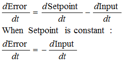

(This is Modification #2 in a larger series on writing a solid PID algorithm)
The Problem
This modification is going to tweak the derivative term a bit. The goal is to eliminate a phenomenon known as “Derivative Kick”.
The image above illustrates the problem. Since error=Setpoint-Input, any change in Setpoint causes an instantaneous change in error. The derivative of this change is infinity (in practice, since dt isn’t 0 it just winds up being a really big number.) This number gets fed into the pid equation, which results in an undesirable spike in the output. Luckily there is an easy way to get rid of this.
The Solution

It turns out that the derivative of the Error is equal to negative derivative of Input, EXCEPT when the Setpoint is changing. This winds up being a perfect solution. Instead of adding (Kd * derivative of Error), we subtract (Kd * derivative of Input). This is known as using “Derivative on Measurement”
The Code
1 2 3 4 5 6 7 8 9 10 11 12 13 14 15 16 17 18 19 20 21 22 23 24 25 26 27 28 29 30 31 32 33 34 35 36 37 38 39 40 41 42 43 44 45 | /*working variables*/unsigned long lastTime;double Input, Output, Setpoint;double errSum, lastInput;double kp, ki, kd;int SampleTime = 1000; //1 secvoid Compute(){ unsigned long now = millis(); int timeChange = (now - lastTime); if(timeChange>=SampleTime) { /*Compute all the working error variables*/ double error = Setpoint - Input; errSum += error; double dInput = (Input - lastInput); /*Compute PID Output*/ Output = kp * error + ki * errSum - kd * dInput; /*Remember some variables for next time*/ lastInput = Input; lastTime = now; }}void SetTunings(double Kp, double Ki, double Kd){ double SampleTimeInSec = ((double)SampleTime)/1000; kp = Kp; ki = Ki * SampleTimeInSec; kd = Kd / SampleTimeInSec;}void SetSampleTime(int NewSampleTime){ if (NewSampleTime > 0) { double ratio = (double)NewSampleTime / (double)SampleTime; ki *= ratio; kd /= ratio; SampleTime = (unsigned long)NewSampleTime; }} |
The modifications here are pretty easy. We’re replacing +dError with -dInput. Instead of remembering the lastError, we now remember the lastInput
The Result
Here’s what those modifications get us. Notice that the input still looks about the same. So we get the same performance, but we don’t send out a huge Output spike every time the Setpoint changes.
This may or may not be a big deal. It all depends on how sensitive your application is to output spikes. The way I see it though, it doesn’t take any more work to do it without kicking so why not do things right?
Next >>


Tags: Arduino, Beginner's PID, PID


{kind=link}
{kind=link}
{kind=link}
> This number gets fed into the pid equation, which results in an undesirable spike in the output.
Obviously, this is true for some (most?) applications but it is not universally true. I worked on a controller for an electric heater that required a rather “aggressive” derivative. Dramatic changes in the output were not only acceptable, they were required.
I’ve seen two methods for getting roughly the same effect: 1. Output rate of change clamping; 2. Output filtering. The advantage is the user can eliminate all spikes, allow some “spikiness”, or allow all spikes.
That’s a fair point. It explains why all manufacturers allow you to choose “derivative on error” even if they default to “derivative on measurement.” I overstated when I said that looking at measurement is the right way to do things.
I’ve seen those output massagers as well. They’re a little out of the scope of this series, but highly effective in the right hands. They’ve been added to the “things I’ll try to talk about later” list.
Im working on a line follower……..
Can u help me with dat……….How to define a setpoint if im using Digital Sensors(Five).Is it that the setpoint will always be that the middle sensor should be on the line.
And then how do i calculate the error and use it for my motors….
You would need to convert the 5 digital signals into 1 analog signal (-2 < -> 2) I’m not sure if this would give you enough resolution to use a pid effectively, but that is how you would do it.
hey me and madar are working together
how much is ur blog applicable for a line follower robot (with 5 digital sensors) as it is?
i mean wat changes we may hv to do ? apart from our own algorithm language n al?
to be specific i hv 3 major questions
1) is SetTunings method required for us?i mean til now we thot kp,ki,kd are constants and we ll give them values?n they shouldnt change their values in between right?
2)how exactly to call compute method after certain time (say 1ms) from main ?
u hvnt specified it on how to call it from main? n is millis() method used for it?
n lastly
3)how we relate output/correction with speed of motors (2)? we know that we ll hv to use PWM. we know how to do it. but we want ur word on this.
we ll be grateful for ur help. ty
Another thing to consider is that the reference can be changed at a controlled rate. There is no advatantage of instantly changing the set point if the controller can’t keep up. It will tend to go “open loop”. You can gradually change the setpoint within the PID loop.
For a positive change:
Linear approach : if (setPntnow<setpoint) setPntnow + aLittleMore;
asymptotic : if (setPntnow<setpoint) setPntnow= setPntnow+(setpoint – setPntnow)/someDivisor;
'aLittleMore' and 'someDivisor' could be any number depending on the wanted rate of change. Of course 2, 4, 8, ect would be a simple shift for 'someDivisor.
@bjbsquared while the setpoint ramping you describe makes things more forgiving for difficult processes or less-than-perfect tuning parameters, I think it’s overstating a bit to say that there is “no advantage” to instantly changing the setpoint. For many processes and with a properly tuned controller, you can achieve a new setpoint far more quickly by just stepping the setpoint to the new value.
that being said, setpoint ramping is a valuable technique used often and industry that can save you a lot of tuning work if you have a slow process
I’ve found that if the PID is running at a high rate (200 hz) and a sensor that measures the rate of change is running at a lower rate (say 10hz) you’ll end up with spikes if your D term is high. We have to run a moving average filter over the derivative to keep that under control or else you’ll have a quad copter engine that sounds terrible or other more negative effects.
@Jason First of all thanks for even being here. I’m a huge fan of the diydrones project. now on to pid.
In my experience (which is almost entirely large, industrial PID,) you don’t gain anything by running the PID more quickly than the input signal changes. you’re asking it to compute a new output without any new information. and yes, you get weird derivative spikes. since the PID is evaluated 20 times for every input change, and the derivative is looking at this point compared to the last… you get 19 0’s then a blip.
I rarely use filter in my professional life. generally I find that I’m better off removing D than trying to massage the signal to make it work. This requires things to be tuned fairly well however, and it takes some time to get a knack for that.
but as I said, I have very little robotics / motor control pid experience, so there may be advantages I’m unaware of. have you tried running your PID more slowly?